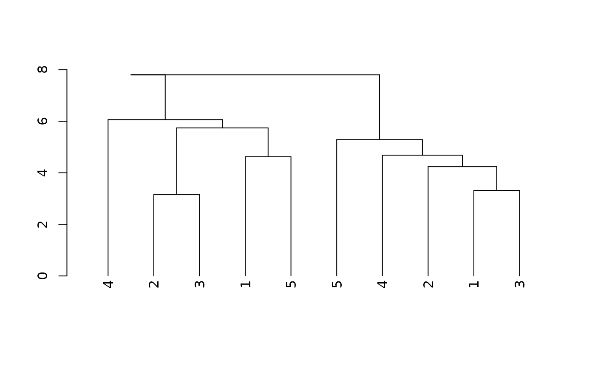

Cluster within group
Examples
mat <- matrix(rnorm(100), 10, 10)
factor <- factor(rep(1:2, each = 5))
dend <- cluster_within_group2(mat, factor)
#>
#> → Will install 22 packages.
#> → All 22 packages (0 B) are cached.
#> + DendSer 1.0.2
#> + TSP 1.2.6
#> + assertthat 0.2.1
#> + ca 0.71.1
#> + dendextend 1.19.1
#> + diptest 0.77-2
#> + dynamicTreeCut 1.63-1
#> + egg 0.4.5
#> + flexmix 2.3-20
#> + fpc 2.2-13
#> + gclus 1.3.3
#> + heatmaply 1.6.0
#> + kernlab 0.9-33
#> + mclust 6.1.2
#> + modeltools 0.2-24
#> + permute 0.9-8
#> + prabclus 2.3-4
#> + pvclust 2.2-0
#> + qap 0.1-2
#> + seriation 1.5.8
#> + vegan 2.7-2
#> + webshot 0.5.5 + ✖ libmagick++-dev, ✖ gsfonts
#> → Will install 2 system packages:
#> + gsfonts - webshot
#> + libmagick++-dev - webshot
#> ℹ No downloads are needed, 22 pkgs are cached
#> ✔ Got diptest 0.77-2 (x86_64-pc-linux-gnu-ubuntu-24.04) (174.55 kB)
#> ✔ Got assertthat 0.2.1 (x86_64-pc-linux-gnu-ubuntu-24.04) (53.11 kB)
#> ✔ Got dynamicTreeCut 1.63-1 (x86_64-pc-linux-gnu-ubuntu-24.04) (90.00 kB)
#> ✔ Got ca 0.71.1 (x86_64-pc-linux-gnu-ubuntu-24.04) (241.85 kB)
#> ✔ Got modeltools 0.2-24 (x86_64-pc-linux-gnu-ubuntu-24.04) (223 kB)
#> ✔ Got DendSer 1.0.2 (x86_64-pc-linux-gnu-ubuntu-24.04) (60.86 kB)
#> ✔ Got prabclus 2.3-4 (x86_64-pc-linux-gnu-ubuntu-24.04) (481.41 kB)
#> ✔ Got qap 0.1-2 (x86_64-pc-linux-gnu-ubuntu-24.04) (467.07 kB)
#> ✔ Got fpc 2.2-13 (x86_64-pc-linux-gnu-ubuntu-24.04) (860.09 kB)
#> ✔ Got TSP 1.2.6 (x86_64-pc-linux-gnu-ubuntu-24.04) (780.72 kB)
#> ✔ Got pvclust 2.2-0 (x86_64-pc-linux-gnu-ubuntu-24.04) (184.52 kB)
#> ✔ Got heatmaply 1.6.0 (x86_64-pc-linux-gnu-ubuntu-24.04) (2.02 MB)
#> ✔ Got permute 0.9-8 (x86_64-pc-linux-gnu-ubuntu-24.04) (239.98 kB)
#> ✔ Got vegan 2.7-2 (x86_64-pc-linux-gnu-ubuntu-24.04) (3.08 MB)
#> ✔ Got mclust 6.1.2 (x86_64-pc-linux-gnu-ubuntu-24.04) (4.16 MB)
#> ✔ Got kernlab 0.9-33 (x86_64-pc-linux-gnu-ubuntu-24.04) (2.05 MB)
#> ✔ Got egg 0.4.5 (x86_64-pc-linux-gnu-ubuntu-24.04) (874.80 kB)
#> ✔ Got webshot 0.5.5 (x86_64-pc-linux-gnu-ubuntu-24.04) (206.60 kB)
#> ✔ Got flexmix 2.3-20 (x86_64-pc-linux-gnu-ubuntu-24.04) (1.76 MB)
#> ✔ Got gclus 1.3.3 (x86_64-pc-linux-gnu-ubuntu-24.04) (420.18 kB)
#> ✔ Got dendextend 1.19.1 (x86_64-pc-linux-gnu-ubuntu-24.04) (5.05 MB)
#> ✔ Got seriation 1.5.8 (x86_64-pc-linux-gnu-ubuntu-24.04) (1.37 MB)
#> ℹ Installing system requirements
#> ℹ Executing `sudo sh -c apt-get -y update`
#> Get:1 file:/etc/apt/apt-mirrors.txt Mirrorlist [144 B]
#> Hit:6 https://packages.microsoft.com/repos/azure-cli noble InRelease
#> Hit:7 https://packages.microsoft.com/ubuntu/24.04/prod noble InRelease
#> Hit:2 http://azure.archive.ubuntu.com/ubuntu noble InRelease
#> Hit:3 http://azure.archive.ubuntu.com/ubuntu noble-updates InRelease
#> Hit:4 http://azure.archive.ubuntu.com/ubuntu noble-backports InRelease
#> Hit:5 http://azure.archive.ubuntu.com/ubuntu noble-security InRelease
#> Reading package lists...
#> ℹ Executing `sudo sh -c apt-get -y install libmagick++-dev gsfonts libcurl4-openssl-dev libssl-dev make pandoc libicu-dev`
#> Reading package lists...
#> Building dependency tree...
#> Reading state information...
#> libcurl4-openssl-dev is already the newest version (8.5.0-2ubuntu10.6).
#> libssl-dev is already the newest version (3.0.13-0ubuntu3.6).
#> make is already the newest version (4.3-4.1build2).
#> pandoc is already the newest version (3.1.3+ds-2).
#> libicu-dev is already the newest version (74.2-1ubuntu3.1).
#> The following additional packages will be installed:
#> build-essential gir1.2-gdkpixbuf-2.0 gir1.2-girepository-2.0-dev
#> gir1.2-rsvg-2.0 gobject-introspection gobject-introspection-bin
#> libdjvulibre-dev libdjvulibre-text libdjvulibre21 libexif-dev libexif-doc
#> libexif12 libgdk-pixbuf-2.0-dev libgdk-pixbuf2.0-bin libgirepository-1.0-dev
#> libgirepository1.0-dev libimath-3-1-29t64 libimath-dev libjxr-tools
#> libjxr0t64 liblcms2-dev liblqr-1-0-dev libmagick++-6-headers
#> libmagick++-6.q16-9t64 libmagick++-6.q16-dev libmagickcore-6-arch-config
#> libmagickcore-6-headers libmagickcore-6.q16-7-extra libmagickcore-6.q16-dev
#> libmagickwand-6-headers libmagickwand-6.q16-dev libopenexr-3-1-30
#> libopenexr-dev librsvg2-2 librsvg2-common librsvg2-dev libwmf-0.2-7
#> libwmf-dev libwmflite-0.2-7 libxt-dev python3-mako python3-markdown
#> Suggested packages:
#> libgirepository1.0-doc inkscape librsvg2-bin librsvg2-doc libwmf-0.2-7-gtk
#> libwmf-doc libxt-doc python-mako-doc python3-beaker python-markdown-doc
#> The following NEW packages will be installed:
#> build-essential gir1.2-gdkpixbuf-2.0 gir1.2-girepository-2.0-dev
#> gir1.2-rsvg-2.0 gobject-introspection gobject-introspection-bin gsfonts
#> libdjvulibre-dev libdjvulibre-text libdjvulibre21 libexif-dev libexif-doc
#> libexif12 libgdk-pixbuf-2.0-dev libgdk-pixbuf2.0-bin libgirepository-1.0-dev
#> libgirepository1.0-dev libimath-3-1-29t64 libimath-dev libjxr-tools
#> libjxr0t64 liblcms2-dev liblqr-1-0-dev libmagick++-6-headers
#> libmagick++-6.q16-9t64 libmagick++-6.q16-dev libmagick++-dev
#> libmagickcore-6-arch-config libmagickcore-6-headers
#> libmagickcore-6.q16-7-extra libmagickcore-6.q16-dev libmagickwand-6-headers
#> libmagickwand-6.q16-dev libopenexr-3-1-30 libopenexr-dev librsvg2-2
#> librsvg2-common librsvg2-dev libwmf-0.2-7 libwmf-dev libwmflite-0.2-7
#> libxt-dev python3-mako python3-markdown
#> 0 upgraded, 44 newly installed, 0 to remove and 49 not upgraded.
#> Need to get 12.7 MB of archives.
#> After this operation, 46.1 MB of additional disk space will be used.
#> Get:1 file:/etc/apt/apt-mirrors.txt Mirrorlist [144 B]
#> Get:2 http://azure.archive.ubuntu.com/ubuntu noble/universe amd64 libmagickcore-6-headers all 8:6.9.12.98+dfsg1-5.2build2 [52.4 kB]
#> Get:3 http://azure.archive.ubuntu.com/ubuntu noble/universe amd64 libmagickwand-6-headers all 8:6.9.12.98+dfsg1-5.2build2 [10.2 kB]
#> Get:4 http://azure.archive.ubuntu.com/ubuntu noble/universe amd64 libmagick++-6-headers all 8:6.9.12.98+dfsg1-5.2build2 [48.2 kB]
#> Get:5 http://azure.archive.ubuntu.com/ubuntu noble/universe amd64 libmagick++-6.q16-9t64 amd64 8:6.9.12.98+dfsg1-5.2build2 [148 kB]
#> Get:6 http://azure.archive.ubuntu.com/ubuntu noble/universe amd64 libmagickcore-6-arch-config amd64 8:6.9.12.98+dfsg1-5.2build2 [28.0 kB]
#> Get:7 http://azure.archive.ubuntu.com/ubuntu noble-updates/main amd64 libdjvulibre-text all 3.5.28-2ubuntu0.24.04.1 [50.9 kB]
#> Get:8 http://azure.archive.ubuntu.com/ubuntu noble-updates/main amd64 libdjvulibre21 amd64 3.5.28-2ubuntu0.24.04.1 [638 kB]
#> Get:9 http://azure.archive.ubuntu.com/ubuntu noble/universe amd64 libimath-3-1-29t64 amd64 3.1.9-3.1ubuntu2 [72.2 kB]
#> Get:10 http://azure.archive.ubuntu.com/ubuntu noble/universe amd64 libopenexr-3-1-30 amd64 3.1.5-5.1build3 [1004 kB]
#> Get:11 http://azure.archive.ubuntu.com/ubuntu noble/main amd64 libwmflite-0.2-7 amd64 0.2.13-1.1build3 [68.6 kB]
#> Get:12 http://azure.archive.ubuntu.com/ubuntu noble/universe amd64 libmagickcore-6.q16-7-extra amd64 8:6.9.12.98+dfsg1-5.2build2 [70.1 kB]
#> Get:13 http://azure.archive.ubuntu.com/ubuntu noble-updates/main amd64 libdjvulibre-dev amd64 3.5.28-2ubuntu0.24.04.1 [2484 kB]
#> Get:14 http://azure.archive.ubuntu.com/ubuntu noble/main amd64 libexif12 amd64 0.6.24-1build2 [87.9 kB]
#> Get:15 http://azure.archive.ubuntu.com/ubuntu noble/main amd64 libexif-dev amd64 0.6.24-1build2 [110 kB]
#> Get:16 http://azure.archive.ubuntu.com/ubuntu noble/main amd64 liblcms2-dev amd64 2.14-2build1 [1809 kB]
#> Get:17 http://azure.archive.ubuntu.com/ubuntu noble/universe amd64 liblqr-1-0-dev amd64 0.4.2-2.1build2 [68.7 kB]
#> Get:18 http://azure.archive.ubuntu.com/ubuntu noble/universe amd64 libimath-dev amd64 3.1.9-3.1ubuntu2 [115 kB]
#> Get:19 http://azure.archive.ubuntu.com/ubuntu noble/universe amd64 libopenexr-dev amd64 3.1.5-5.1build3 [106 kB]
#> Get:20 http://azure.archive.ubuntu.com/ubuntu noble-updates/main amd64 gir1.2-gdkpixbuf-2.0 amd64 2.42.10+dfsg-3ubuntu3.2 [9488 B]
#> Get:21 http://azure.archive.ubuntu.com/ubuntu noble/main amd64 librsvg2-2 amd64 2.58.0+dfsg-1build1 [2135 kB]
#> Get:22 http://azure.archive.ubuntu.com/ubuntu noble/main amd64 gir1.2-rsvg-2.0 amd64 2.58.0+dfsg-1build1 [11.1 kB]
#> Get:23 http://azure.archive.ubuntu.com/ubuntu noble-updates/main amd64 libgdk-pixbuf2.0-bin amd64 2.42.10+dfsg-3ubuntu3.2 [13.9 kB]
#> Get:24 http://azure.archive.ubuntu.com/ubuntu noble-updates/main amd64 libgdk-pixbuf-2.0-dev amd64 2.42.10+dfsg-3ubuntu3.2 [48.0 kB]
#> Get:25 http://azure.archive.ubuntu.com/ubuntu noble/main amd64 librsvg2-common amd64 2.58.0+dfsg-1build1 [11.8 kB]
#> Get:26 http://azure.archive.ubuntu.com/ubuntu noble/main amd64 gir1.2-girepository-2.0-dev amd64 1.80.1-1 [41.5 kB]
#> Get:27 http://azure.archive.ubuntu.com/ubuntu noble/main amd64 build-essential amd64 12.10ubuntu1 [4928 B]
#> Get:28 http://azure.archive.ubuntu.com/ubuntu noble/main amd64 python3-mako all 1.3.2-1 [63.3 kB]
#> Get:29 http://azure.archive.ubuntu.com/ubuntu noble/main amd64 python3-markdown all 3.5.2-1 [72.0 kB]
#> Get:30 http://azure.archive.ubuntu.com/ubuntu noble/main amd64 gobject-introspection-bin amd64 1.80.1-1 [254 kB]
#> Get:31 http://azure.archive.ubuntu.com/ubuntu noble/main amd64 gobject-introspection amd64 1.80.1-1 [105 kB]
#> Get:32 http://azure.archive.ubuntu.com/ubuntu noble/main amd64 libgirepository-1.0-dev amd64 1.80.1-1 [28.5 kB]
#> Get:33 http://azure.archive.ubuntu.com/ubuntu noble/main amd64 libgirepository1.0-dev amd64 1.80.1-1 [17.0 kB]
#> Get:34 http://azure.archive.ubuntu.com/ubuntu noble/universe amd64 librsvg2-dev amd64 2.58.0+dfsg-1build1 [38.0 kB]
#> Get:35 http://azure.archive.ubuntu.com/ubuntu noble/main amd64 libwmf-0.2-7 amd64 0.2.13-1.1build3 [92.0 kB]
#> Get:36 http://azure.archive.ubuntu.com/ubuntu noble/main amd64 libwmf-dev amd64 0.2.13-1.1build3 [236 kB]
#> Get:37 http://azure.archive.ubuntu.com/ubuntu noble/main amd64 libxt-dev amd64 1:1.2.1-1.2build1 [394 kB]
#> Get:38 http://azure.archive.ubuntu.com/ubuntu noble/universe amd64 libmagickcore-6.q16-dev amd64 8:6.9.12.98+dfsg1-5.2build2 [1114 kB]
#> Get:39 http://azure.archive.ubuntu.com/ubuntu noble/universe amd64 libmagickwand-6.q16-dev amd64 8:6.9.12.98+dfsg1-5.2build2 [340 kB]
#> Get:40 http://azure.archive.ubuntu.com/ubuntu noble/universe amd64 libmagick++-6.q16-dev amd64 8:6.9.12.98+dfsg1-5.2build2 [143 kB]
#> Get:41 http://azure.archive.ubuntu.com/ubuntu noble/universe amd64 libmagick++-dev all 8:6.9.12.98+dfsg1-5.2build2 [1030 B]
#> Get:42 http://azure.archive.ubuntu.com/ubuntu noble/universe amd64 gsfonts all 2:20200910-8 [17.1 kB]
#> Get:43 http://azure.archive.ubuntu.com/ubuntu noble/main amd64 libexif-doc all 0.6.24-1build2 [366 kB]
#> Get:44 http://azure.archive.ubuntu.com/ubuntu noble/universe amd64 libjxr0t64 amd64 1.2~git20170615.f752187-5.1ubuntu2 [181 kB]
#> Get:45 http://azure.archive.ubuntu.com/ubuntu noble/universe amd64 libjxr-tools amd64 1.2~git20170615.f752187-5.1ubuntu2 [15.8 kB]
#> Fetched 12.7 MB in 0s (41.5 MB/s)
#> Selecting previously unselected package libmagickcore-6-headers.
#> (Reading database ...
#> (Reading database ... 5%
(Reading database ... 10%
(Reading database ... 15%
(Reading database ... 20%
(Reading database ... 25%
(Reading database ... 30%
(Reading database ... 35%
(Reading database ... 40%
(Reading database ... 45%
(Reading database ... 50%
(Reading database ... 55%
#> (Reading database ... 60%
#> (Reading database ... 65%
#> (Reading database ... 70%
#> (Reading database ... 75%
#> (Reading database ... 80%
#> (Reading database ... 85%
#> (Reading database ... 90%
#> (Reading database ... 95%
#> (Reading database ... 100%
(Reading database ... 269009 files and directories currently installed.)
#> Preparing to unpack .../00-libmagickcore-6-headers_8%3a6.9.12.98+dfsg1-5.2build2_all.deb ...
#> Unpacking libmagickcore-6-headers (8:6.9.12.98+dfsg1-5.2build2) ...
#> Selecting previously unselected package libmagickwand-6-headers.
#> Preparing to unpack .../01-libmagickwand-6-headers_8%3a6.9.12.98+dfsg1-5.2build2_all.deb ...
#> Unpacking libmagickwand-6-headers (8:6.9.12.98+dfsg1-5.2build2) ...
#> Selecting previously unselected package libmagick++-6-headers.
#> Preparing to unpack .../02-libmagick++-6-headers_8%3a6.9.12.98+dfsg1-5.2build2_all.deb ...
#> Unpacking libmagick++-6-headers (8:6.9.12.98+dfsg1-5.2build2) ...
#> Selecting previously unselected package libmagick++-6.q16-9t64:amd64.
#> Preparing to unpack .../03-libmagick++-6.q16-9t64_8%3a6.9.12.98+dfsg1-5.2build2_amd64.deb ...
#> Unpacking libmagick++-6.q16-9t64:amd64 (8:6.9.12.98+dfsg1-5.2build2) ...
#> Selecting previously unselected package libmagickcore-6-arch-config:amd64.
#> Preparing to unpack .../04-libmagickcore-6-arch-config_8%3a6.9.12.98+dfsg1-5.2build2_amd64.deb ...
#> Unpacking libmagickcore-6-arch-config:amd64 (8:6.9.12.98+dfsg1-5.2build2) ...
#> Selecting previously unselected package libdjvulibre-text.
#> Preparing to unpack .../05-libdjvulibre-text_3.5.28-2ubuntu0.24.04.1_all.deb ...
#> Unpacking libdjvulibre-text (3.5.28-2ubuntu0.24.04.1) ...
#> Selecting previously unselected package libdjvulibre21:amd64.
#> Preparing to unpack .../06-libdjvulibre21_3.5.28-2ubuntu0.24.04.1_amd64.deb ...
#> Unpacking libdjvulibre21:amd64 (3.5.28-2ubuntu0.24.04.1) ...
#> Selecting previously unselected package libimath-3-1-29t64:amd64.
#> Preparing to unpack .../07-libimath-3-1-29t64_3.1.9-3.1ubuntu2_amd64.deb ...
#> Unpacking libimath-3-1-29t64:amd64 (3.1.9-3.1ubuntu2) ...
#> Selecting previously unselected package libopenexr-3-1-30:amd64.
#> Preparing to unpack .../08-libopenexr-3-1-30_3.1.5-5.1build3_amd64.deb ...
#> Unpacking libopenexr-3-1-30:amd64 (3.1.5-5.1build3) ...
#> Selecting previously unselected package libwmflite-0.2-7:amd64.
#> Preparing to unpack .../09-libwmflite-0.2-7_0.2.13-1.1build3_amd64.deb ...
#> Unpacking libwmflite-0.2-7:amd64 (0.2.13-1.1build3) ...
#> Selecting previously unselected package libmagickcore-6.q16-7-extra:amd64.
#> Preparing to unpack .../10-libmagickcore-6.q16-7-extra_8%3a6.9.12.98+dfsg1-5.2build2_amd64.deb ...
#> Unpacking libmagickcore-6.q16-7-extra:amd64 (8:6.9.12.98+dfsg1-5.2build2) ...
#> Selecting previously unselected package libdjvulibre-dev:amd64.
#> Preparing to unpack .../11-libdjvulibre-dev_3.5.28-2ubuntu0.24.04.1_amd64.deb ...
#> Unpacking libdjvulibre-dev:amd64 (3.5.28-2ubuntu0.24.04.1) ...
#> Selecting previously unselected package libexif12:amd64.
#> Preparing to unpack .../12-libexif12_0.6.24-1build2_amd64.deb ...
#> Unpacking libexif12:amd64 (0.6.24-1build2) ...
#> Selecting previously unselected package libexif-dev:amd64.
#> Preparing to unpack .../13-libexif-dev_0.6.24-1build2_amd64.deb ...
#> Unpacking libexif-dev:amd64 (0.6.24-1build2) ...
#> Selecting previously unselected package liblcms2-dev:amd64.
#> Preparing to unpack .../14-liblcms2-dev_2.14-2build1_amd64.deb ...
#> Unpacking liblcms2-dev:amd64 (2.14-2build1) ...
#> Selecting previously unselected package liblqr-1-0-dev:amd64.
#> Preparing to unpack .../15-liblqr-1-0-dev_0.4.2-2.1build2_amd64.deb ...
#> Unpacking liblqr-1-0-dev:amd64 (0.4.2-2.1build2) ...
#> Selecting previously unselected package libimath-dev:amd64.
#> Preparing to unpack .../16-libimath-dev_3.1.9-3.1ubuntu2_amd64.deb ...
#> Unpacking libimath-dev:amd64 (3.1.9-3.1ubuntu2) ...
#> Selecting previously unselected package libopenexr-dev.
#> Preparing to unpack .../17-libopenexr-dev_3.1.5-5.1build3_amd64.deb ...
#> Unpacking libopenexr-dev (3.1.5-5.1build3) ...
#> Selecting previously unselected package gir1.2-gdkpixbuf-2.0:amd64.
#> Preparing to unpack .../18-gir1.2-gdkpixbuf-2.0_2.42.10+dfsg-3ubuntu3.2_amd64.deb ...
#> Unpacking gir1.2-gdkpixbuf-2.0:amd64 (2.42.10+dfsg-3ubuntu3.2) ...
#> Selecting previously unselected package librsvg2-2:amd64.
#> Preparing to unpack .../19-librsvg2-2_2.58.0+dfsg-1build1_amd64.deb ...
#> Unpacking librsvg2-2:amd64 (2.58.0+dfsg-1build1) ...
#> Selecting previously unselected package gir1.2-rsvg-2.0:amd64.
#> Preparing to unpack .../20-gir1.2-rsvg-2.0_2.58.0+dfsg-1build1_amd64.deb ...
#> Unpacking gir1.2-rsvg-2.0:amd64 (2.58.0+dfsg-1build1) ...
#> Selecting previously unselected package libgdk-pixbuf2.0-bin.
#> Preparing to unpack .../21-libgdk-pixbuf2.0-bin_2.42.10+dfsg-3ubuntu3.2_amd64.deb ...
#> Unpacking libgdk-pixbuf2.0-bin (2.42.10+dfsg-3ubuntu3.2) ...
#> Selecting previously unselected package libgdk-pixbuf-2.0-dev:amd64.
#> Preparing to unpack .../22-libgdk-pixbuf-2.0-dev_2.42.10+dfsg-3ubuntu3.2_amd64.deb ...
#> Unpacking libgdk-pixbuf-2.0-dev:amd64 (2.42.10+dfsg-3ubuntu3.2) ...
#> Selecting previously unselected package librsvg2-common:amd64.
#> Preparing to unpack .../23-librsvg2-common_2.58.0+dfsg-1build1_amd64.deb ...
#> Unpacking librsvg2-common:amd64 (2.58.0+dfsg-1build1) ...
#> Selecting previously unselected package gir1.2-girepository-2.0-dev:amd64.
#> Preparing to unpack .../24-gir1.2-girepository-2.0-dev_1.80.1-1_amd64.deb ...
#> Unpacking gir1.2-girepository-2.0-dev:amd64 (1.80.1-1) ...
#> Selecting previously unselected package build-essential.
#> Preparing to unpack .../25-build-essential_12.10ubuntu1_amd64.deb ...
#> Unpacking build-essential (12.10ubuntu1) ...
#> Selecting previously unselected package python3-mako.
#> Preparing to unpack .../26-python3-mako_1.3.2-1_all.deb ...
#> Unpacking python3-mako (1.3.2-1) ...
#> Selecting previously unselected package python3-markdown.
#> Preparing to unpack .../27-python3-markdown_3.5.2-1_all.deb ...
#> Unpacking python3-markdown (3.5.2-1) ...
#> Selecting previously unselected package gobject-introspection-bin.
#> Preparing to unpack .../28-gobject-introspection-bin_1.80.1-1_amd64.deb ...
#> Unpacking gobject-introspection-bin (1.80.1-1) ...
#> Selecting previously unselected package gobject-introspection:amd64.
#> Preparing to unpack .../29-gobject-introspection_1.80.1-1_amd64.deb ...
#> Unpacking gobject-introspection:amd64 (1.80.1-1) ...
#> Selecting previously unselected package libgirepository-1.0-dev:amd64.
#> Preparing to unpack .../30-libgirepository-1.0-dev_1.80.1-1_amd64.deb ...
#> Unpacking libgirepository-1.0-dev:amd64 (1.80.1-1) ...
#> Selecting previously unselected package libgirepository1.0-dev.
#> Preparing to unpack .../31-libgirepository1.0-dev_1.80.1-1_amd64.deb ...
#> Unpacking libgirepository1.0-dev (1.80.1-1) ...
#> Selecting previously unselected package librsvg2-dev:amd64.
#> Preparing to unpack .../32-librsvg2-dev_2.58.0+dfsg-1build1_amd64.deb ...
#> Unpacking librsvg2-dev:amd64 (2.58.0+dfsg-1build1) ...
#> Selecting previously unselected package libwmf-0.2-7:amd64.
#> Preparing to unpack .../33-libwmf-0.2-7_0.2.13-1.1build3_amd64.deb ...
#> Unpacking libwmf-0.2-7:amd64 (0.2.13-1.1build3) ...
#> Selecting previously unselected package libwmf-dev.
#> Preparing to unpack .../34-libwmf-dev_0.2.13-1.1build3_amd64.deb ...
#> Unpacking libwmf-dev (0.2.13-1.1build3) ...
#> Selecting previously unselected package libxt-dev:amd64.
#> Preparing to unpack .../35-libxt-dev_1%3a1.2.1-1.2build1_amd64.deb ...
#> Unpacking libxt-dev:amd64 (1:1.2.1-1.2build1) ...
#> Selecting previously unselected package libmagickcore-6.q16-dev:amd64.
#> Preparing to unpack .../36-libmagickcore-6.q16-dev_8%3a6.9.12.98+dfsg1-5.2build2_amd64.deb ...
#> Unpacking libmagickcore-6.q16-dev:amd64 (8:6.9.12.98+dfsg1-5.2build2) ...
#> Selecting previously unselected package libmagickwand-6.q16-dev:amd64.
#> Preparing to unpack .../37-libmagickwand-6.q16-dev_8%3a6.9.12.98+dfsg1-5.2build2_amd64.deb ...
#> Unpacking libmagickwand-6.q16-dev:amd64 (8:6.9.12.98+dfsg1-5.2build2) ...
#> Selecting previously unselected package libmagick++-6.q16-dev:amd64.
#> Preparing to unpack .../38-libmagick++-6.q16-dev_8%3a6.9.12.98+dfsg1-5.2build2_amd64.deb ...
#> Unpacking libmagick++-6.q16-dev:amd64 (8:6.9.12.98+dfsg1-5.2build2) ...
#> Selecting previously unselected package libmagick++-dev.
#> Preparing to unpack .../39-libmagick++-dev_8%3a6.9.12.98+dfsg1-5.2build2_all.deb ...
#> Unpacking libmagick++-dev (8:6.9.12.98+dfsg1-5.2build2) ...
#> Selecting previously unselected package gsfonts.
#> Preparing to unpack .../40-gsfonts_2%3a20200910-8_all.deb ...
#> Unpacking gsfonts (2:20200910-8) ...
#> Selecting previously unselected package libexif-doc.
#> Preparing to unpack .../41-libexif-doc_0.6.24-1build2_all.deb ...
#> Unpacking libexif-doc (0.6.24-1build2) ...
#> Selecting previously unselected package libjxr0t64:amd64.
#> Preparing to unpack .../42-libjxr0t64_1.2~git20170615.f752187-5.1ubuntu2_amd64.deb ...
#> Unpacking libjxr0t64:amd64 (1.2~git20170615.f752187-5.1ubuntu2) ...
#> Selecting previously unselected package libjxr-tools.
#> Preparing to unpack .../43-libjxr-tools_1.2~git20170615.f752187-5.1ubuntu2_amd64.deb ...
#> Unpacking libjxr-tools (1.2~git20170615.f752187-5.1ubuntu2) ...
#> Setting up libwmflite-0.2-7:amd64 (0.2.13-1.1build3) ...
#> Setting up gir1.2-gdkpixbuf-2.0:amd64 (2.42.10+dfsg-3ubuntu3.2) ...
#> Setting up liblqr-1-0-dev:amd64 (0.4.2-2.1build2) ...
#> Setting up gir1.2-girepository-2.0-dev:amd64 (1.80.1-1) ...
#> Setting up librsvg2-2:amd64 (2.58.0+dfsg-1build1) ...
#> Setting up libjxr0t64:amd64 (1.2~git20170615.f752187-5.1ubuntu2) ...
#> Setting up libwmf-0.2-7:amd64 (0.2.13-1.1build3) ...
#> Setting up libxt-dev:amd64 (1:1.2.1-1.2build1) ...
#> Setting up gsfonts (2:20200910-8) ...
#> Setting up libexif12:amd64 (0.6.24-1build2) ...
#> Setting up libimath-3-1-29t64:amd64 (3.1.9-3.1ubuntu2) ...
#> Setting up python3-markdown (3.5.2-1) ...
#> Setting up librsvg2-common:amd64 (2.58.0+dfsg-1build1) ...
#> Setting up libmagick++-6.q16-9t64:amd64 (8:6.9.12.98+dfsg1-5.2build2) ...
#> Setting up liblcms2-dev:amd64 (2.14-2build1) ...
#> Setting up libexif-doc (0.6.24-1build2) ...
#> Setting up libgdk-pixbuf2.0-bin (2.42.10+dfsg-3ubuntu3.2) ...
#> Setting up build-essential (12.10ubuntu1) ...
#> Setting up libmagickcore-6-headers (8:6.9.12.98+dfsg1-5.2build2) ...
#> Setting up libdjvulibre-text (3.5.28-2ubuntu0.24.04.1) ...
#> Setting up gir1.2-rsvg-2.0:amd64 (2.58.0+dfsg-1build1) ...
#> Setting up python3-mako (1.3.2-1) ...
#> Setting up libgdk-pixbuf-2.0-dev:amd64 (2.42.10+dfsg-3ubuntu3.2) ...
#> Setting up libimath-dev:amd64 (3.1.9-3.1ubuntu2) ...
#> Setting up libmagickcore-6-arch-config:amd64 (8:6.9.12.98+dfsg1-5.2build2) ...
#> Setting up libexif-dev:amd64 (0.6.24-1build2) ...
#> Setting up libjxr-tools (1.2~git20170615.f752187-5.1ubuntu2) ...
#> Setting up libmagickwand-6-headers (8:6.9.12.98+dfsg1-5.2build2) ...
#> Setting up gobject-introspection-bin (1.80.1-1) ...
#> Setting up libdjvulibre21:amd64 (3.5.28-2ubuntu0.24.04.1) ...
#> Setting up gobject-introspection:amd64 (1.80.1-1) ...
#> Setting up libdjvulibre-dev:amd64 (3.5.28-2ubuntu0.24.04.1) ...
#> Setting up libwmf-dev (0.2.13-1.1build3) ...
#> Setting up libopenexr-3-1-30:amd64 (3.1.5-5.1build3) ...
#> Setting up libgirepository-1.0-dev:amd64 (1.80.1-1) ...
#> Setting up libmagickcore-6.q16-7-extra:amd64 (8:6.9.12.98+dfsg1-5.2build2) ...
#> Setting up libmagick++-6-headers (8:6.9.12.98+dfsg1-5.2build2) ...
#> Setting up libopenexr-dev (3.1.5-5.1build3) ...
#> Setting up libgirepository1.0-dev (1.80.1-1) ...
#> Setting up librsvg2-dev:amd64 (2.58.0+dfsg-1build1) ...
#> Setting up libmagickcore-6.q16-dev:amd64 (8:6.9.12.98+dfsg1-5.2build2) ...
#> Setting up libmagickwand-6.q16-dev:amd64 (8:6.9.12.98+dfsg1-5.2build2) ...
#> Setting up libmagick++-6.q16-dev:amd64 (8:6.9.12.98+dfsg1-5.2build2) ...
#> Setting up libmagick++-dev (8:6.9.12.98+dfsg1-5.2build2) ...
#> Processing triggers for man-db (2.12.0-4build2) ...
#> Not building database; man-db/auto-update is not 'true'.
#> Processing triggers for libgdk-pixbuf-2.0-0:amd64 (2.42.10+dfsg-3ubuntu3.2) ...
#> Processing triggers for libc-bin (2.39-0ubuntu8.6) ...
#> Running kernel seems to be up-to-date.
#>
#> Restarting services...
#> Service restarts being deferred:
#> systemctl restart networkd-dispatcher.service
#>
#> No containers need to be restarted.
#>
#> No user sessions are running outdated binaries.
#>
#> No VM guests are running outdated hypervisor (qemu) binaries on this host.
#> ✔ Installed assertthat 0.2.1 (59ms)
#> ✔ Installed ca 0.71.1 (82ms)
#> ✔ Installed dendextend 1.19.1 (172ms)
#> ✔ Installed DendSer 1.0.2 (188ms)
#> ✔ Installed diptest 0.77-2 (100ms)
#> ✔ Installed dynamicTreeCut 1.63-1 (65ms)
#> ✔ Installed egg 0.4.5 (63ms)
#> ✔ Installed flexmix 2.3-20 (154ms)
#> ✔ Installed fpc 2.2-13 (90ms)
#> ✔ Installed gclus 1.3.3 (68ms)
#> ✔ Installed heatmaply 1.6.0 (73ms)
#> ✔ Installed kernlab 0.9-33 (69ms)
#> ✔ Installed mclust 6.1.2 (67ms)
#> ✔ Installed modeltools 0.2-24 (116ms)
#> ✔ Installed permute 0.9-8 (91ms)
#> ✔ Installed prabclus 2.3-4 (68ms)
#> ✔ Installed pvclust 2.2-0 (64ms)
#> ✔ Installed qap 0.1-2 (65ms)
#> ✔ Installed seriation 1.5.8 (68ms)
#> ✔ Installed TSP 1.2.6 (122ms)
#> ✔ Installed vegan 2.7-2 (92ms)
#> ✔ Installed webshot 0.5.5 (51ms)
#> ✔ 1 pkg + 129 deps: kept 108, added 22, dld 22 (24.84 MB) [15.9s]
dend
#> 'dendrogram' with 2 branches and 10 members total, at height 7.730525
plot(dend)
